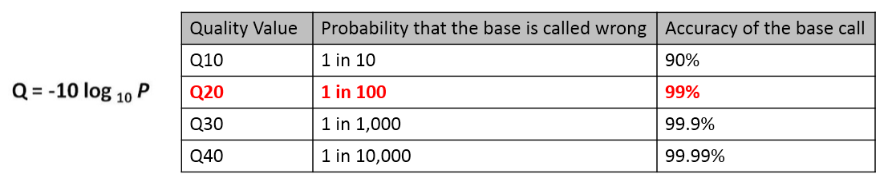

| Sample QC information | |||||
| # | Sample Name | Total Read# | Total Base# | Trimmed Read#(Q20) | Trimmed Base#(Q20) |
|
A Phred quality score (Q score) is the most common metric used to assess the accuracy of a sequence base from sequencing platforms. It is an integer value representing the estimated probability of a sequencing error (P), i.e. that the base is incorrect. Q=-10*log 10P Q20 means the accuracy of the base is 99% (1% chance to be wrong), while Q30 means the base accuracy is ~ 99.9%.  |
|||||
| Data Trimming Process |
|
BaseCall Conversion Illumina's official basecalling program, the bcl2fastq conversion software v2.20, was used to convert BCL files from all Illumina sequencing platforms into FASTQ reads.
Both adaptor clipping and sequence quality trimming were performed using Trimmomatic v0.36 with a sliding-window approach. |
| FASTQC Report for FASTQ data | ||
| # | Sample Name | QC Report |
| FASTQC Report Interpretation | ||
| Basic Statistics | ||
| Per base Sequence Quality | ||
| Per Sequence Quality Scores | ||